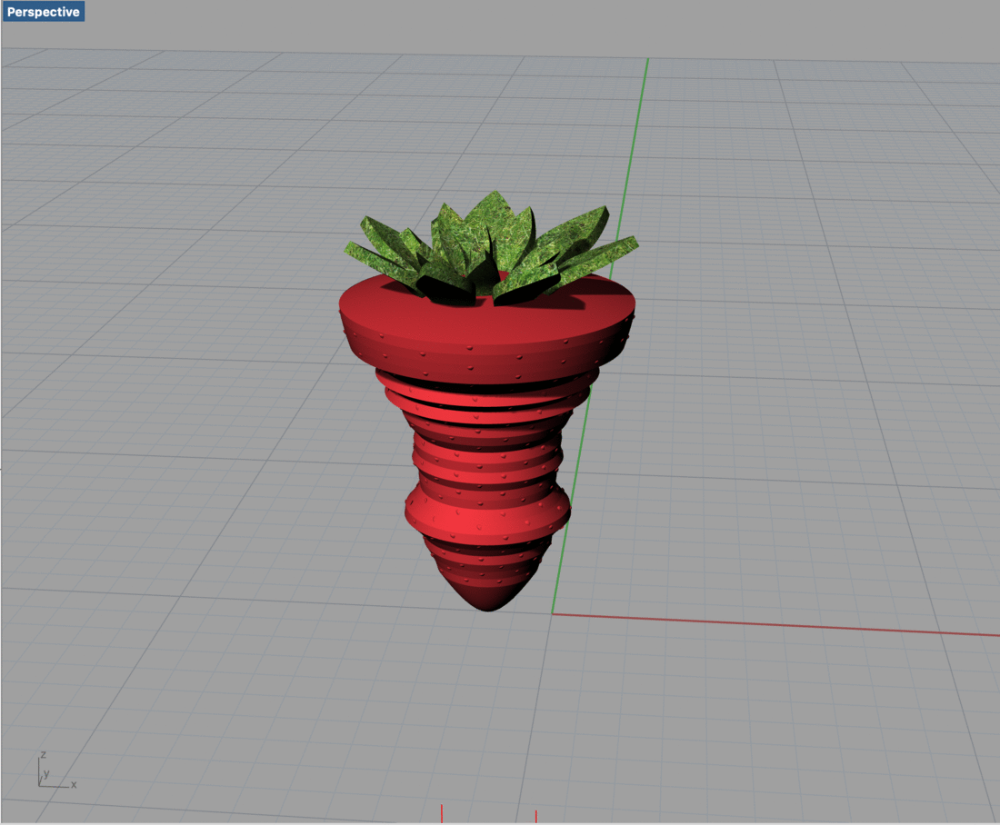
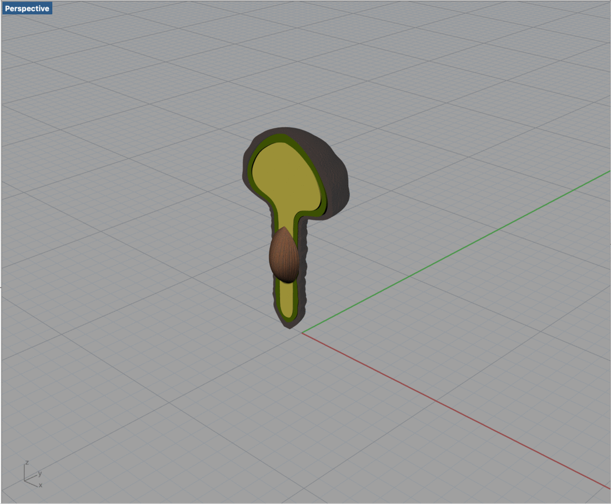
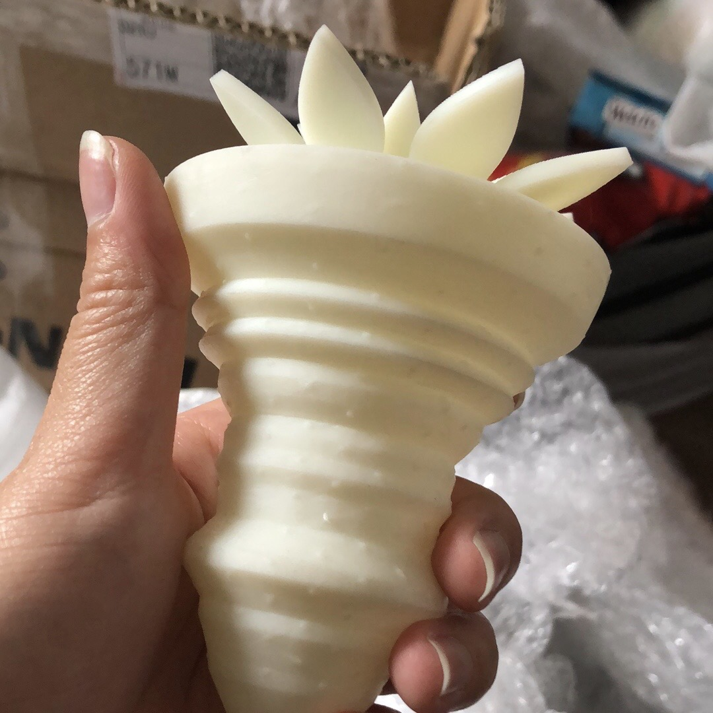
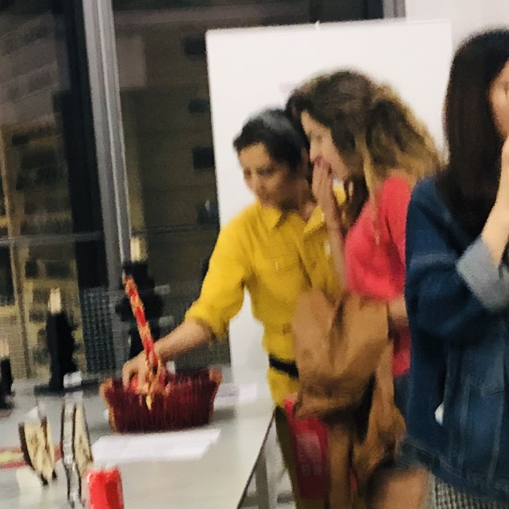
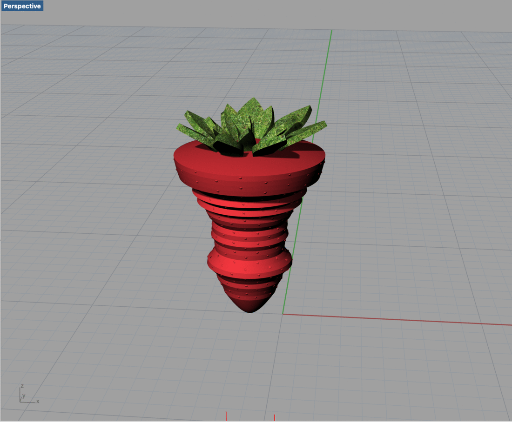
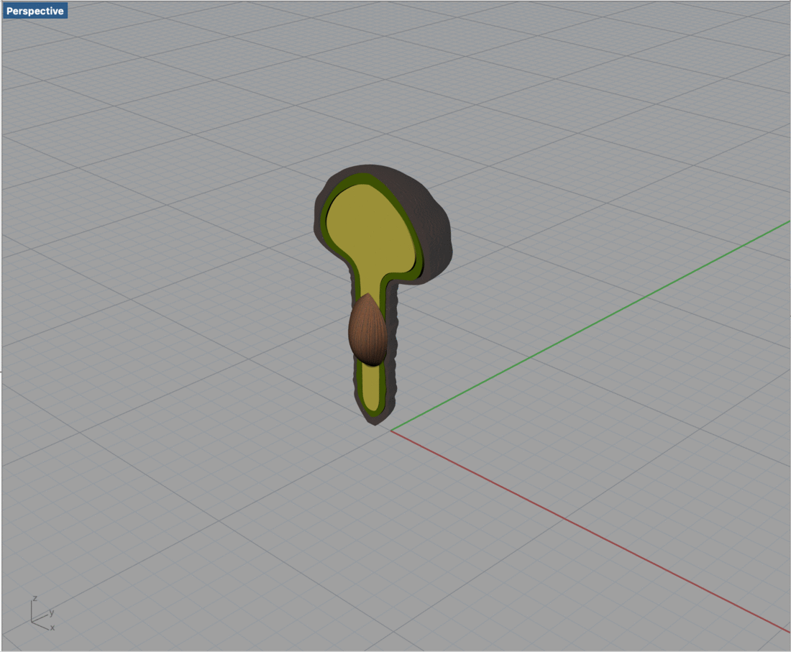
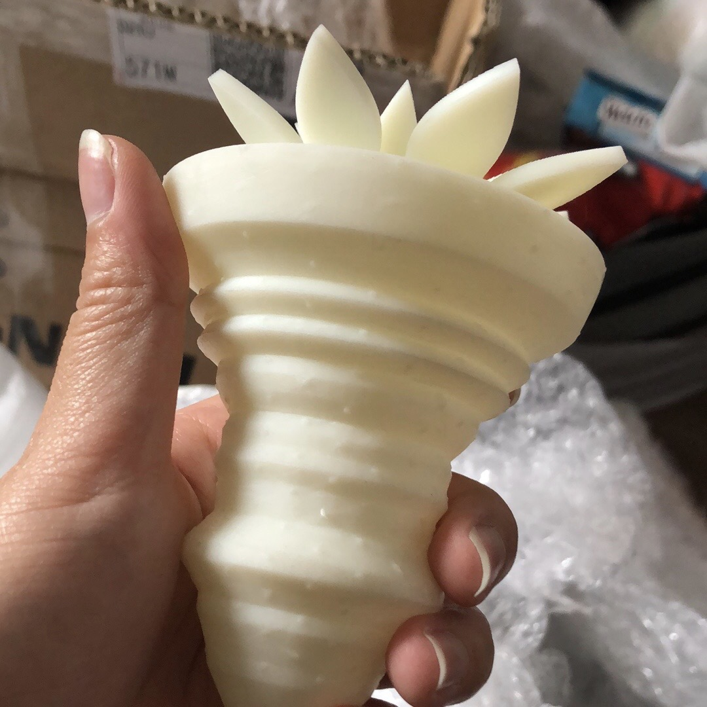
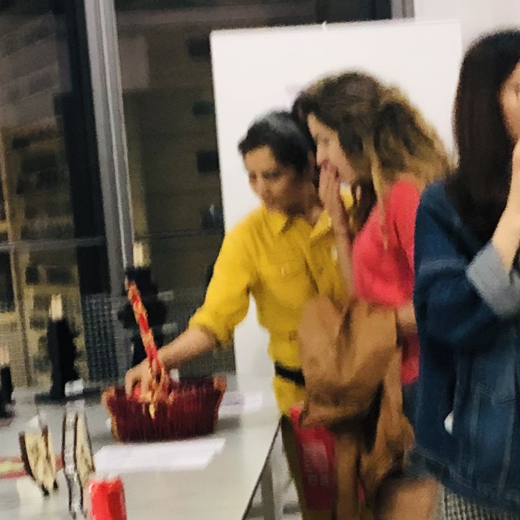

Thriving Green Power is a 3D printed data sculpture project demonstrating a specific observation
of the Chinese market with the importing statistics of three fruits: apple, strawberry, and avocado.
It provokes thinking about the economic and cultural
globalization behind the thriving avocado business.
Context: “Though avocado only entered the Chinese market several years ago, its imports have been soaring…it
[avocado] eventually won the hearts of middle-class foodies as it is rich in nutrition”.The uprising of avocados in
the Chinese market has been a miracle. The demand for avocados by the young middle-class has increased
roughly 1000 times more in a decade[1].
Goal: From this visualization, my viewers will realize the demand for apples and strawberries is dropping
over the years, even though the market for apples is still huge; the demand for avocado, however, boosts in a very
short time that the shape looks very unnatural. Viewers are led to think about the concept of “traditional” and “popular”, and the purpose is to raise the awareness
of a changing global market.
Fruits are always a popular choice as gifts in China, and the trend of popular fruits tells us what
Chinese consumers favor in a global market. Apples, for example, are traditionally a top choice for festivals and
ceremonies; strawberries and avocados are imported foreign fruits gaining popularity in modern times
(strawberry entered the market about 100 years ago while avocado only has a short history of few decades). By comparing
the fruit consumption, we will observe a dramatic shift in the consumption level and style of Chinese customers in a rapidly
developing market.
I embodied the data using the concept of data sculpture, which is “a direct externalization of the data,”
in terms of “perceivable presence, shape or form”[2]. I used the data of import quantity and value of avocados in China,
connected the data points as a curve and then revolved the curve 360 degrees for a shape of the sculpturehed; later I
added details to make it recognizable as a certain fruit. By playing with its size, curve and volume, I present a
fast-growing market in a visible, touchable, playful way.
Lastly, I held an exhibition show for this project. I 3D printed three fruit models, colored them, and put
them in a Chinese fruit gift basket. In the show, audiences got to read my motivation for creation and touched the
"data" with their own hands.
"Though avocado only entered the Chinese market several years ago, its imports have been soaring. In 2011, China imported 31.8 tonnes of avocado, last year the figure hit 32,100 tonnes, an increase of more than 1,000 times"
[1] China Focus: New produce from B&R countries
make their way to Chinese homes

"The Age of the World"
Mathieu Lehanneur
In the near future, how will avocados, the green power, continues to thrive in Chinese market?
Will more consumers follow this trend where avocade is often branded as “healthy food,” “best choice
for a diet?” How to recognize the bandwagon effect behind this crazily growing market “colonialization”?
Poster for the exhibition show
 







datasets are from Food and Agriculture Organization of the United Nations
Grasshopper codes can be found in my Github